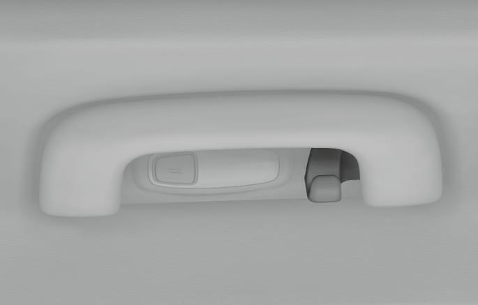
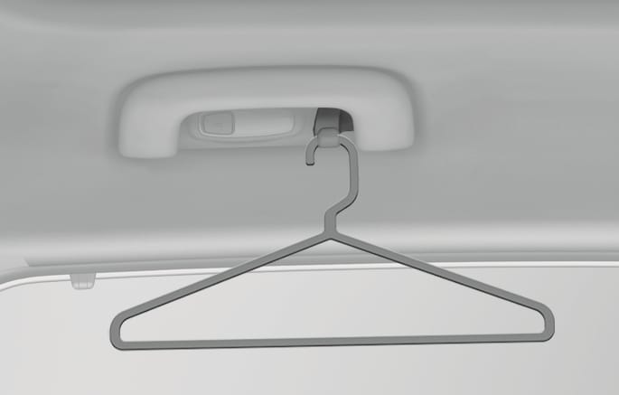

코트 후크

2C_CoatHook
뒷좌석 유리창 위 손잡이에 설치된 코트 후크에 옷을 걸어 보관할 수 있습니다.
코트 후크에 무거운 옷을 걸지 마십시오. 후크가 손상될 수 있습니다.

2C_CoatHookWarning
코트 후크에 옷 이외의 다른 물건을 걸어 두지 마십시오. 옷걸이 등 단단하고 날카로운 물건이나 깨지기 쉬운 물건을 걸어 두는 경우, 충돌이 발생하거나 커튼 에어백이 작동할 때 차량 손상, 심각한 부상 및 인명피해가 발생할 수 있습니다.